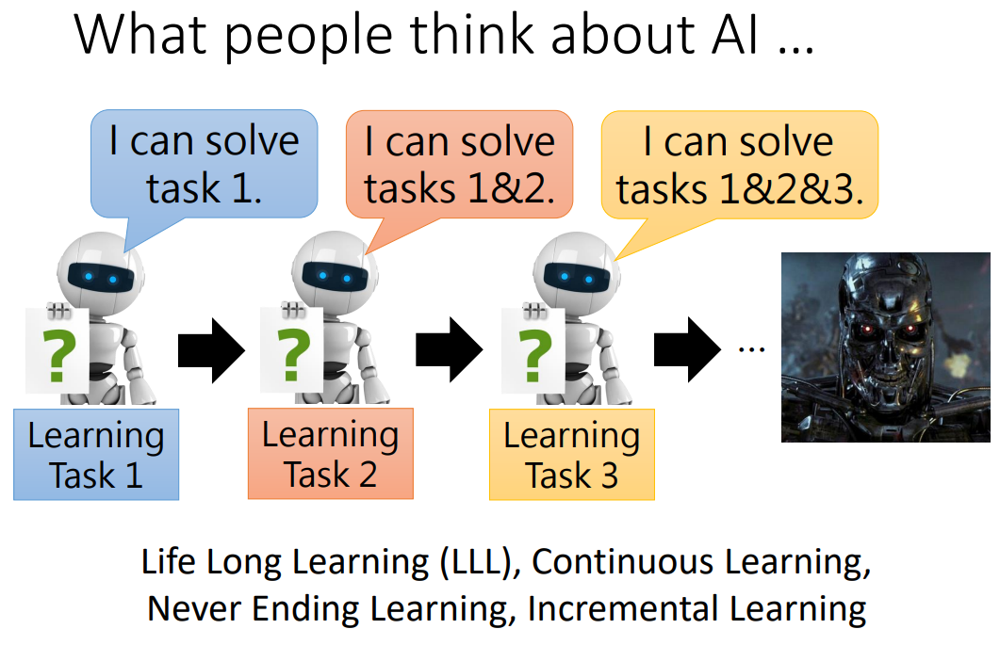
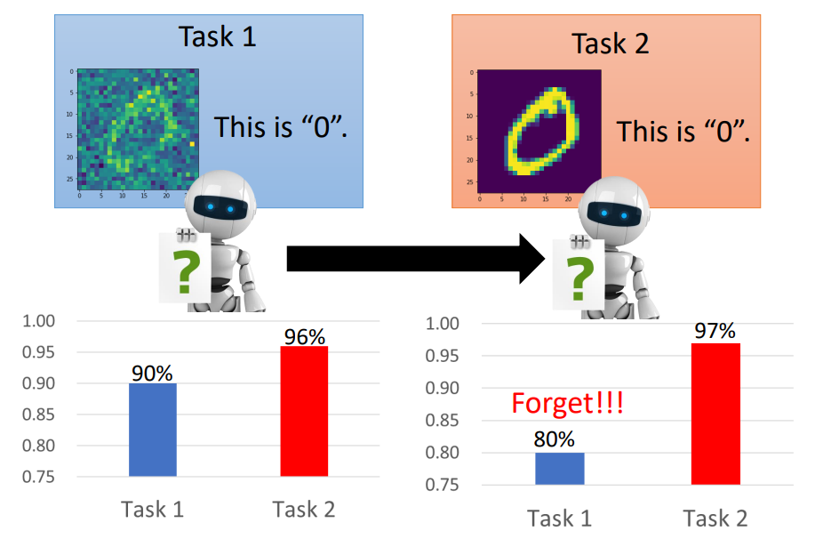
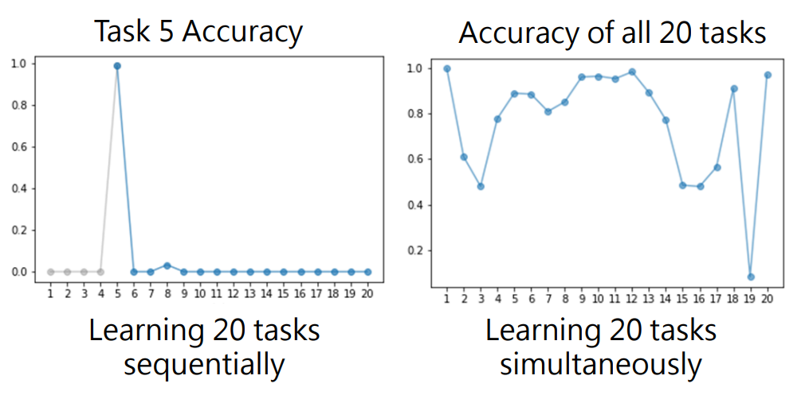
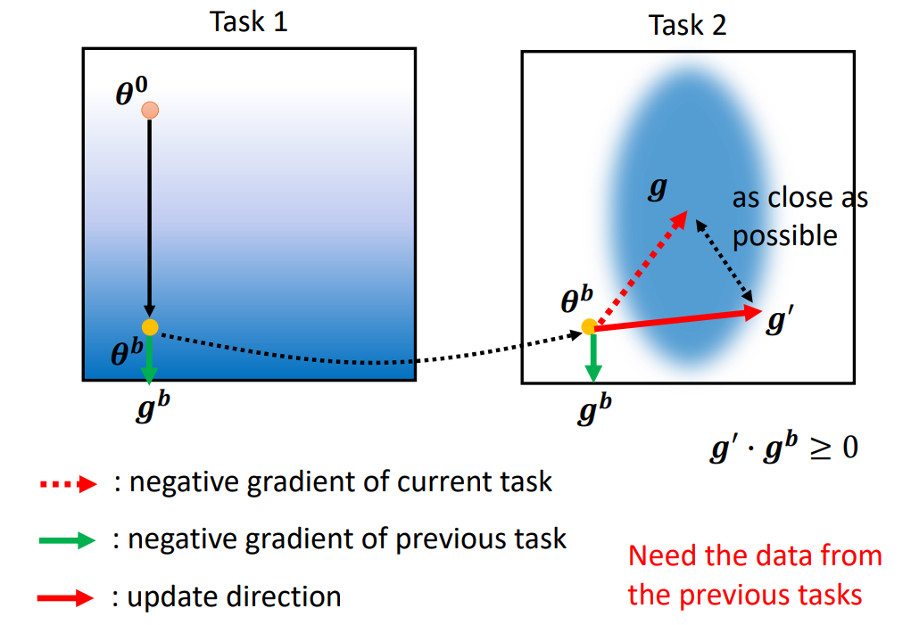
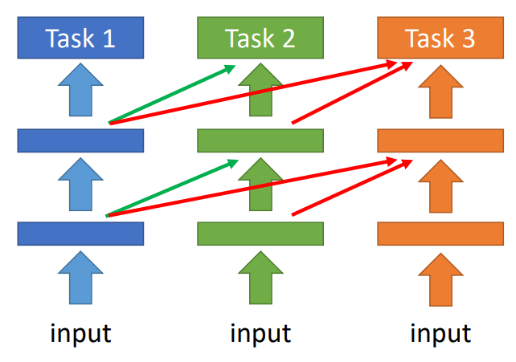
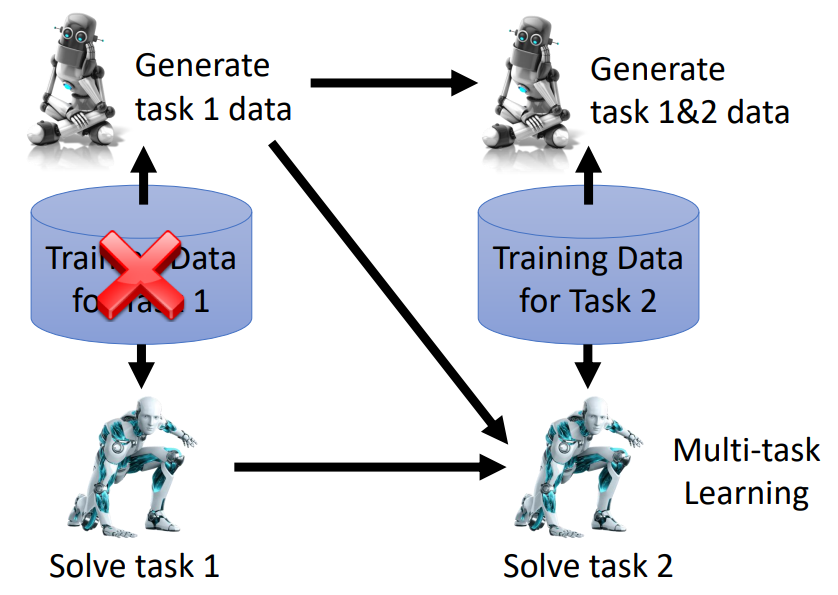
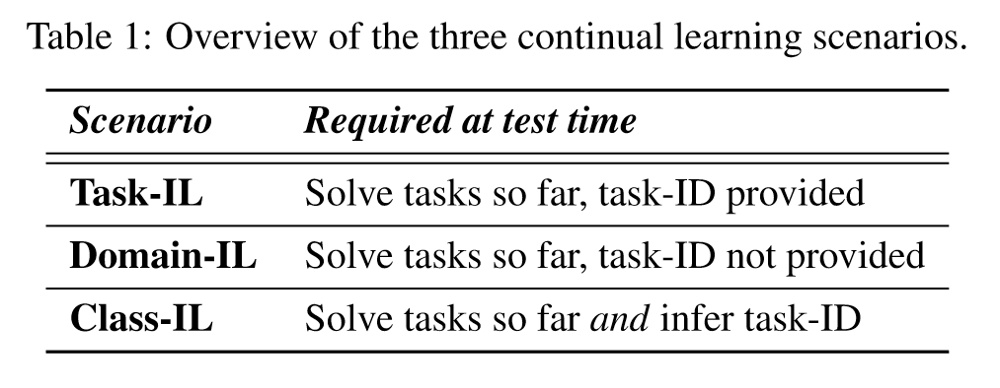
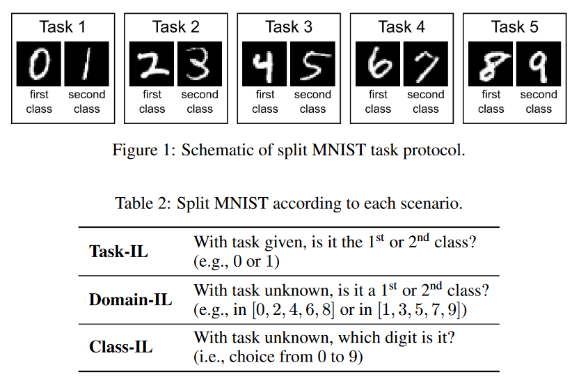

对于AI的想象#
对于AI，可能会想象今天教AI视觉，明天教AI语言……，在不断增加新的任务后，最终可以炼成无所不能的“天网”。这一过程称为Life Long Learning（LLL）。
灾难性遗忘#
但是实际上，AI在学习后面的任务后，可能会“遗忘”以前学会的任务。哪怕在最简单的手写数字识别任务上，先教会AI分辨带有噪声的手写数字，然后再教AI分辨一般的数字，都可以让AI在分辨含噪数字图片任务上的表现变差。
AI学习了新的任务而在旧的任务上表现变差的现象，称为灾难性遗忘。
但是实际上，如果AI一次性学习很多任务，可以发现AI在较多任务上都能有不错的表现，比如下图右侧显示的：让AI同时学习20各简单的NLP任务，在多个任务上都能有较好的表现，但是如果让AI依次学习各个任务，就会出现灾难性遗忘。
但是如果每次训练都让AI同时学习所有任务，则需要非常大量的存储空间用于存储多个任务的数据，同时训练过程会变得非常漫长。所以同时训练多个任务在某些场景下可能是不现实的。因此我们需要让AI依次学习不同的任务，还要避免灾难性遗忘。
Life-Long v.s. Transfer#
Life Long Learning和Transfer Learning都涉及到旧任务和新任务的学习，但是二者关注点不同
- Transfer Learning更关注学习旧任务后模型能否很好地学习新任务
- Life Long Learning更关注学习新任务后是否遗忘旧任务
Evaluation#
评估Life Long Learning的效果（克服灾难性遗忘程度如何），一般可以哪里列出下图中的表格，第一行代表随机初始化模型在各个任务上的表现，第1-T行代表在训练模型做第1-T个任务后模型在第1-T个任务上的表现。
一种评估的方法是计算Accuracy：

LLL实现方式#
Selective Synaptic Plasticity#
这种方法是一种Regularization based Approach的方法，在讨论这个方法之前，先了解以下为什么会产生灾难性遗忘。
在梯度下降时，我们会对模型的参数
所以我们在让模型学习新的任务时，需要对loss function加上一些约束：
上式中
如果
还有一种约束模型优化方向的方法是https://arxiv.org/abs/1706.08840中提到的Gradient Episodic Memory (GEM)，这种方法的思想有点类似momentum，会在下个任务学习中，用一点之前的任务的数据，来计算出之前的优化方向，然后约束新的优化方向和旧的优化方向之间的夹角大小。
Progressive Neural Networks#
Progressive Neural Networks是指对于相似的任务，可以共用网络的某些部分，只需要在最后的输出层有所不同即可，比如多个分类任务可以公用中间的特征提取部分，只需要不同的FC层即可。但是这样的方法可能会让模型十分臃肿，也会需要比较多的空间。
Memory Reply#
Memory Reply是指在用task 1的数据训练模型做task 1的同时训练一个能生成task 1数据的生成器，然后就可以删除task 1的数据，在训练模型做task 2时，用task 2的数据和生成的task 1数据同时训练，然后再训练一个能生成task 1和task 2训练数据的生成器。后续依此类推。这种方法可以逼近Multi-task learning的训练效果，但也有人认为这不算一种LLL的方法。
LLL的不同场景#
https://arxiv.org/abs/1904.07734中提到了LLL的三种不同场景（如Table 1所示）
Table 1的描述可能比较抽象。具体对应到手写数字识别中，假设今天把十个数字两两分开，形成五个task，三种场景的具体示例参见Table 2。
作者: 核子